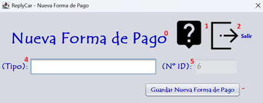

El alta de una forma de pago consiste en el rellenado de la ficha con sus datos para poder realizar las facturas y el seguimiento de las intervenciones. Sigue las instrucciones de la fotografía para realizar el proceso correctamente. Para realizar el alta de una forma de pago debe ingresar los datos que corresponden a la numeración expuesta en la fotografía. Vamos a proceder:

0 - Título de la pantalla, descripción de lo que significa la pantalla.
1 - Botón para proceder a leer la ayuda de la aplicación.
2 - Botón para salir de la aplicación.
4 - Ingresa el nombre de la forma de pago.
5 - Nº de id que tiene la forma de pago.
6 - Guardar la nueva forma de pago.
Nota: Pulsando F1 en la ventana principal, se abrirá esta página de ayuda.